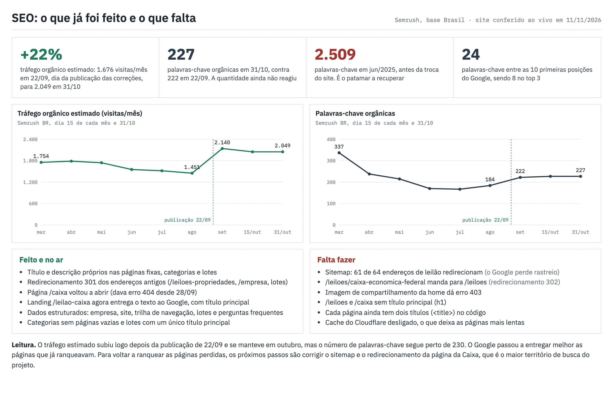
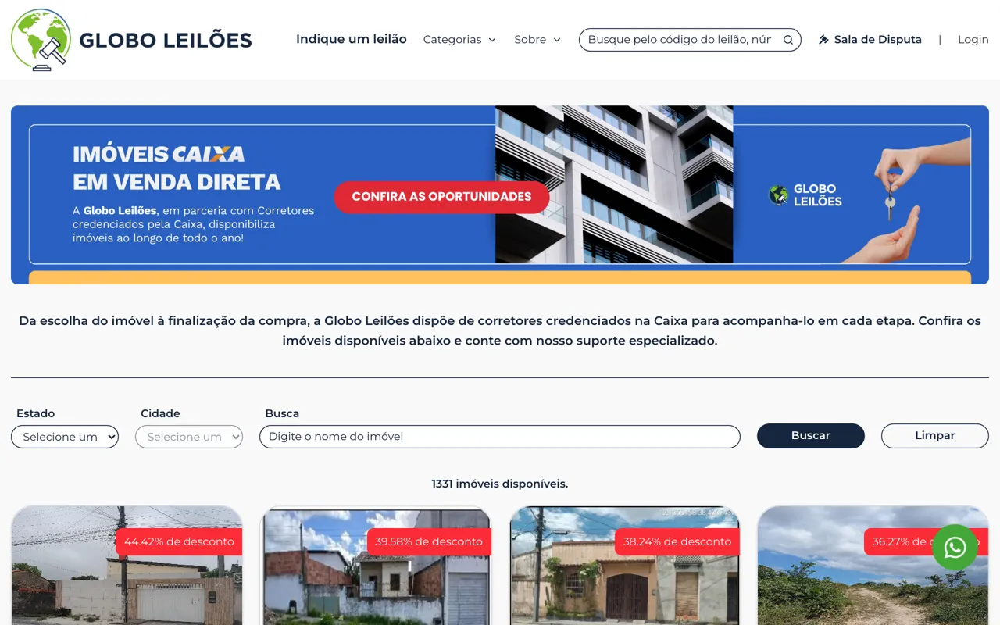
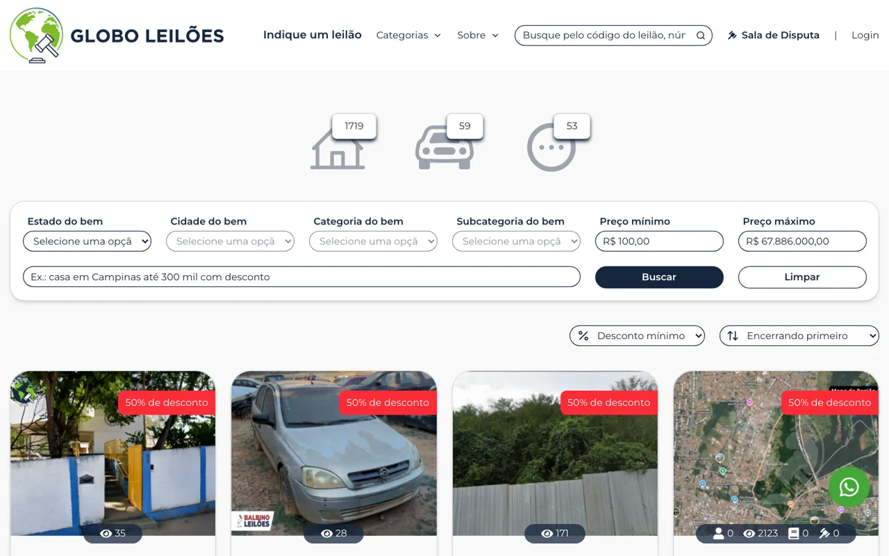
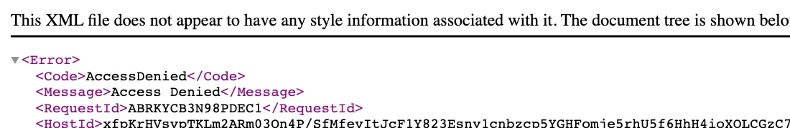

Dossiê de posicionamento de globoleiloes.com.br para a marca, leilão de imóveis e leilão Caixa: onde o site está hoje, o que já foi feito, o que falta e com quem está cada tarefa.
Resultado de outubro no Semrush e o site conferido ao vivo, item por item, com o robô do Google. Cada print abaixo é a prova do item.

Título e descrição próprios nas páginas fixas, categorias e lotes.
Redirecionamento 301 dos endereços antigos: /leiloes-propriedades vai para /leiloes-imoveis e /empresa/caixa-economica-federal/2 vai para /leiloes/caixa-economica-federal.
/caixa voltou a abrir (dava erro 404 desde 28/09), com 1.331 imóveis listados.
/leilao-caixa agora entrega o texto ao Google, com título principal "Leilão de imóveis Caixa".
Dados estruturados de empresa, site, trilha de navegação, lotes e perguntas frequentes.
Sitemap: 61 dos 64 endereços de leilão listados redirecionam. O Google gasta rastreio em página que não existe mais.
/leiloes/caixa-economica-federal manda para a listagem geral /leiloes (redirecionamento 302). Era a página da Caixa com mais cliques.
Imagem de compartilhamento da home dá erro 403 (acesso negado no S3), então o link sai sem foto no WhatsApp e nas redes.
/leiloes e /caixa sem título principal (h1). Cada página ainda tem dois <title> no código.
Cache do Cloudflare desligado (DYNAMIC): toda visita é montada do zero, o que deixa o site lento.



Conferido em 11/11/2026 com o robô do Google (Googlebot): /caixa 200, /leilao-caixa 200, /leiloes-propriedades 301, /leiloes/caixa-economica-federal 302 para /leiloes, imagem de compartilhamento 403, sitemap com 217 endereços (16 fixos, 64 leilões, 60 categorias, 1 landing Caixa, 76 lotes), cache-control no-cache e Cloudflare DYNAMIC.
O foco são três frentes: a marca Globo Leilões, leilão de imóveis em geral (casas, apartamentos, terrenos e cidades) e leilão Caixa. A marca está em 1º, mas perdeu metade dos cliques. A Caixa começou a aparecer. Imóveis em geral continua sem nenhuma posição, e é onde a Globo tem inventário próprio para disputar.
www.globoleiloes.com.br responde como um site separado, com título "Globo Leilões" e "Home", e aparece junto com o site principal na primeira página da busca pela marca. Precisa de redirecionamento 301 para globoleiloes.com.br.
Entre 11 e 31 segundos para começar a responder. O Bing caiu de cerca de 600 para 100 impressões por dia depois de 20/10, e o Google tende a rastrear menos um site lento.
/leiloes/caixa-economica-federal teve 467 cliques e 81,5 mil impressões em 28 dias, e hoje manda o visitante para /leiloes. A landing nova, /leilao-caixa, chega vazia para o Google e para as IAs.
São cerca de 100 mil buscas por mês somando imóveis em geral, casas e cidades. Quem ocupa o topo (mgl, imovelweb, wimoveis) tem página por tipo, estado e cidade. A Globo já tem as páginas por cidade, mas falta o nível de cima.
Cada frente olha o mesmo site de um ângulo. A nota diz onde estamos em 30/10.
Quem busca "Globo Leilões" chegar ao site.
1º, com perda de cliqueAparecer em leilão de imóveis, casas, apartamentos, terrenos e cidades.
o ponto mais fracoDisputar o maior volume do setor.
aparecendo, com defeitosO Google conseguir ler, entender e indexar cada página.
base pronta, com regressõesSer citada por ChatGPT, Perplexity, Gemini e Copilot.
não citada em busca comercialSaber de onde vem cada cadastro.
parcialBuscas por mês no Brasil, segundo o Semrush. Dificuldade vai de 0 a 100 (abaixo de 30 é fácil). A posição vem do Semrush. A coluna do Search Console traz cliques, impressões e posição média em 28 dias: quando ela mostra posição numa busca que o Semrush dá como fora do top 100, é porque a Globo aparece só para poucas pessoas, por região ou histórico, e as impressões mostram o alcance real. As variações de escrita se sobrepõem, então a soma mede o tamanho do território, não visitas únicas. Veículos ficou de fora por não ser o foco.
| Palavra-chave | Buscas/mês | Dificuldade | Posição | Search Console (cliques / impr. / pos.) | Página que deve ranquear |
|---|---|---|---|---|---|
| globo leilões | 33 | 1º | 134 / 429 / 1,0 | / (home) | |
| globo leiloes | 35 | 1º | 373 / 1.247 / 1,0 | / (home) | |
| globoleiloes | 36 | 1º | 59 / 298 / 1,0 | / (home) | |
| globo leilões caixa | 1º | 9 / 50 / 1,0 | / (home) | ||
| globo leilão | 1º | 33 / 56 / 1,0 | / (home) | ||
| global leilões | 1,6º | 22 / 60 / 1,6 | / (home) |
| Palavra-chave | Buscas/mês | Dificuldade | Posição | Search Console (cliques / impr. / pos.) | Página que deve ranquear |
|---|---|---|---|---|---|
| leilao de imoveis | 50 | fora do top 100 | 1 / 7 / 21,7 | /leiloes-imoveis | |
| leilao imoveis | 25 | fora do top 100 | 2 / 18 / 14,9 | /leiloes-imoveis | |
| imoveis leilao | 51 | fora do top 100 | sem impressão | /leiloes-imoveis | |
| imoveis de leilao | 11 | fora do top 100 | sem impressão | /leiloes-imoveis | |
| leilão de imóveis | 52 | fora do top 100 | 0 / 8 / 20,5 | /leiloes-imoveis | |
| imoveis em leilao | 33 | 33º | 0 / 3 / 6,7 | /leiloes-imoveis | |
| imóveis em leilão | 43 | 33º | 0 / 2 / 11,5 | /leiloes-imoveis | |
| imoveis no leilao | 47 | fora do top 100 | sem impressão | /leiloes-imoveis | |
| leilao consegue financiar imoveis | 16 | fora do top 100 | sem impressão | /leiloes-imoveis | |
| leilão de apartamentos | 43 | fora do top 100 | sem impressão | /leiloes-imoveis | |
| leilão de terrenos | 34 | fora do top 100 | sem impressão | /leiloes-imoveis | |
| leiloes de terrenos | 42º | sem impressão | /leiloes-imoveis | ||
| leilão judicial de imóveis | 41 | fora do top 100 | sem impressão | /leiloes-imoveis |
| Palavra-chave | Buscas/mês | Dificuldade | Posição | Search Console (cliques / impr. / pos.) | Página que deve ranquear |
|---|---|---|---|---|---|
| leilao de casas | 32 | fora do top 100 | sem impressão | /leiloes-imoveis/casas (a criar) e por estado | |
| casa de leilao | 32 | fora do top 100 | 1 / 1 / 7,0 | /leiloes-imoveis/casas (a criar) e por estado | |
| leilao de casa | 46 | fora do top 100 | 0 / 6 / 11,8 | /leiloes-imoveis/casas (a criar) e por estado | |
| leilão de casas | 38 | fora do top 100 | sem impressão | /leiloes-imoveis/casas (a criar) e por estado | |
| casa leilao | 24 | fora do top 100 | sem impressão | /leiloes-imoveis/casas (a criar) e por estado | |
| casas de leilao | 45 | fora do top 100 | sem impressão | /leiloes-imoveis/casas (a criar) e por estado | |
| leilão de casa | 44 | fora do top 100 | 0 / 2 / 9,5 | /leiloes-imoveis/casas (a criar) e por estado | |
| casas em leilão | 22 | fora do top 100 | sem impressão | /leiloes-imoveis/casas (a criar) e por estado | |
| casas leilao | 16 | fora do top 100 | sem impressão | /leiloes-imoveis/casas (a criar) e por estado | |
| leilao casa | 21 | fora do top 100 | 0 / 2 / 10,5 | /leiloes-imoveis/casas (a criar) e por estado | |
| leilao casas | 44 | fora do top 100 | sem impressão | /leiloes-imoveis/casas (a criar) e por estado | |
| casas em leilao | 17 | fora do top 100 | sem impressão | /leiloes-imoveis/casas (a criar) e por estado | |
| casa em leilao | 28 | fora do top 100 | sem impressão | /leiloes-imoveis/casas (a criar) e por estado | |
| como comprar casa de leilao | 19 | fora do top 100 | sem impressão | /leiloes-imoveis/casas (a criar) e por estado | |
| leilao de casas sp | 41 | fora do top 100 | sem impressão | /leiloes-imoveis/casas (a criar) e por estado | |
| leilao casas curitiba | 23 | fora do top 100 | sem impressão | /leiloes-imoveis/casas (a criar) e por estado | |
| casas leilao sp | 35 | fora do top 100 | sem impressão | /leiloes-imoveis/casas (a criar) e por estado |
| Palavra-chave | Buscas/mês | Dificuldade | Posição | Search Console (cliques / impr. / pos.) | Página que deve ranquear |
|---|---|---|---|---|---|
| leilao imoveis curitiba | 27 | fora do top 100 | sem impressão | página de imóveis da cidade (a criar, ligada às categorias por cidade) | |
| imoveis de leilao curitiba | 24 | fora do top 100 | sem impressão | página de imóveis da cidade (a criar, ligada às categorias por cidade) | |
| leilao de imoveis são paulo | 37 | fora do top 100 | 0 / 2 / 27,0 | página de imóveis da cidade (a criar, ligada às categorias por cidade) | |
| leilao de imoveis em curitiba | 21 | fora do top 100 | sem impressão | página de imóveis da cidade (a criar, ligada às categorias por cidade) | |
| leilao de imoveis rio de janeiro | 24 | fora do top 100 | sem impressão | página de imóveis da cidade (a criar, ligada às categorias por cidade) | |
| leilao de imoveis sao paulo | 31 | fora do top 100 | sem impressão | página de imóveis da cidade (a criar, ligada às categorias por cidade) | |
| leilao imoveis rj | 58 | fora do top 100 | sem impressão | página de imóveis da cidade (a criar, ligada às categorias por cidade) | |
| leilao imoveis sc | 36 | fora do top 100 | sem impressão | página de imóveis da cidade (a criar, ligada às categorias por cidade) | |
| leilao imoveis sp | 33 | fora do top 100 | sem impressão | página de imóveis da cidade (a criar, ligada às categorias por cidade) | |
| leilão de imóveis sp | 35 | fora do top 100 | sem impressão | página de imóveis da cidade (a criar, ligada às categorias por cidade) |
| Palavra-chave | Buscas/mês | Dificuldade | Posição | Search Console (cliques / impr. / pos.) | Página que deve ranquear |
|---|---|---|---|---|---|
| leilao caixa | 56 | 8,3º | 145 / 35.483 / 8,3 | /leilao-caixa (e /leilao-caixa/{estado}/{cidade}) | |
| leilão caixa | 49 | 8,6º | 27 / 7.392 / 8,6 | /leilao-caixa (e /leilao-caixa/{estado}/{cidade}) | |
| caixa leilao | 67 | fora do top 100 | 0 / 1.713 / 8,6 | /leilao-caixa (e /leilao-caixa/{estado}/{cidade}) | |
| leilao caixa imoveis | 49 | fora do top 100 | 1 / 130 / 9,7 | /leilao-caixa (e /leilao-caixa/{estado}/{cidade}) | |
| imoveis leilao caixa | 47 | fora do top 100 | 0 / 24 / 10,5 | /leilao-caixa (e /leilao-caixa/{estado}/{cidade}) | |
| leilao da caixa | 45 | 8,8º | 18 / 3.152 / 8,8 | /leilao-caixa (e /leilao-caixa/{estado}/{cidade}) | |
| leilão de imóveis caixa | 58 | fora do top 100 | 0 / 45 / 10,3 | /leilao-caixa (e /leilao-caixa/{estado}/{cidade}) | |
| caixa imoveis leilao | 54 | fora do top 100 | 0 / 131 / 8,8 | /leilao-caixa (e /leilao-caixa/{estado}/{cidade}) | |
| leilao imoveis caixa | 50 | fora do top 100 | 0 / 51 / 8,8 | /leilao-caixa (e /leilao-caixa/{estado}/{cidade}) | |
| imoveis para leilao da caixa | 37 | fora do top 100 | sem impressão | /leilao-caixa (e /leilao-caixa/{estado}/{cidade}) | |
| casa de leilao caixa | 44 | fora do top 100 | 0 / 4 / 8,8 | /leilao-caixa (e /leilao-caixa/{estado}/{cidade}) | |
| imoveis em leilao caixa | 45 | fora do top 100 | sem impressão | /leilao-caixa (e /leilao-caixa/{estado}/{cidade}) | |
| leilao de imoveis caixa | 57 | fora do top 100 | 0 / 32 / 10,6 | /leilao-caixa (e /leilao-caixa/{estado}/{cidade}) | |
| casa leilao caixa | 43 | fora do top 100 | 0 / 9 / 11,6 | /leilao-caixa (e /leilao-caixa/{estado}/{cidade}) | |
| leilao imovel caixa | 54 | fora do top 100 | 0 / 4 / 9,2 | /leilao-caixa (e /leilao-caixa/{estado}/{cidade}) | |
| leilao de imoveis da caixa | 69 | fora do top 100 | 0 / 18 / 9,8 | /leilao-caixa (e /leilao-caixa/{estado}/{cidade}) | |
| caixa economica leilao | 47 | fora do top 100 | 2 / 226 / 7,6 | /leilao-caixa (e /leilao-caixa/{estado}/{cidade}) | |
| casas leilao da caixa | 41 | fora do top 100 | 0 / 2 / 10,0 | /leilao-caixa (e /leilao-caixa/{estado}/{cidade}) | |
| leilao caixa economica | 53 | fora do top 100 | 2 / 295 / 8,8 | /leilao-caixa (e /leilao-caixa/{estado}/{cidade}) | |
| leilao casa caixa | 52 | fora do top 100 | 0 / 2 / 10,0 | /leilao-caixa (e /leilao-caixa/{estado}/{cidade}) | |
| leilao da caixa economica | 51 | fora do top 100 | 1 / 76 / 9,1 | /leilao-caixa (e /leilao-caixa/{estado}/{cidade}) | |
| leilao de imoveis da caixa economica federal | 50 | fora do top 100 | 0 / 9 / 8,1 | /leilao-caixa (e /leilao-caixa/{estado}/{cidade}) | |
| leilao de imoveis cef | 49 | fora do top 100 | sem impressão | /leilao-caixa (e /leilao-caixa/{estado}/{cidade}) | |
| leilao caixa sc | 25º | sem impressão | /leilao-caixa (e /leilao-caixa/{estado}/{cidade}) | ||
| leilão da caixa sc | 26º | sem impressão | /leilao-caixa (e /leilao-caixa/{estado}/{cidade}) | ||
| leilão de imóveis rj caixa | 17º | sem impressão | /leilao-caixa (e /leilao-caixa/{estado}/{cidade}) | ||
| leilão de imoveis da caixa em fortaleza | 48º | sem impressão | /leilao-caixa (e /leilao-caixa/{estado}/{cidade}) | ||
| leilao caixa fortaleza | 21º | 0 / 4 / 12,2 | /leilao-caixa (e /leilao-caixa/{estado}/{cidade}) | ||
| leilão caixa economica rj | 16º | sem impressão | /leilao-caixa (e /leilao-caixa/{estado}/{cidade}) |
| Palavra-chave | Buscas/mês | Dificuldade | Posição | Search Console (cliques / impr. / pos.) | Página que deve ranquear |
|---|---|---|---|---|---|
| itau leilao imoveis | 38 | fora do top 100 | sem impressão | só se houver inventário do banco | |
| leilao imoveis santander | 27 | fora do top 100 | sem impressão | só se houver inventário do banco | |
| banco do brasil imoveis leilao | 31 | fora do top 100 | sem impressão | só se houver inventário do banco | |
| leilao imoveis bradesco | 35 | fora do top 100 | sem impressão | só se houver inventário do banco |
O que mudou desde o primeiro levantamento, em números.
| Medida | Agora | Antes |
|---|---|---|
| Impressões | 95.500 | 34.900 |
| Cliques | 1.770 | 2.350 |
| Posição média | 8,5 | 7,8 |
| "globo leiloes" (cliques) | 373 | 749 |
| "leilao caixa" (cliques) | 145 | 70 |
| Marca: impressões / posição | 2.491 / 2,2 | |
| Caixa: impressões / posição | 76.370 / 8,6 | |
| Imóveis em geral: impressões / posição | 344 / 12,0 | |
| Casas: impressões / posição | 31 / 8,9 | |
| Páginas indexadas | 1.060 | |
| Páginas fora do índice | 2.760 |
| Data | Palavras | Tráfego/mês |
|---|---|---|
| jun/2025, antes da troca do site | 2.509 | |
| fev/2026 | 1.337 | 2.388 |
| ago/2026 | 184 | 1.451 |
| 22/09, correções no ar | 222 | 1.676 |
| 20/10 | 219 | 2.090 |
| Medida | Valor |
|---|---|
| Cliques (30 dias) | 231 |
| Impressões (30 dias) | 10.800 |
| Citações no Copilot (3 meses) | 206 |
| "leilão caixa": impressões / posição | 2.500 / 8,4 |
| Pergunta | Resultado |
|---|---|
| Perplexity: melhores sites para imóvel em leilão da Caixa | não |
| Perplexity: leiloeira online confiável no Brasil | não |
| ChatGPT: sites confiáveis para imóvel da Caixa | não |
| Perplexity: Globo Leilões é confiável? | sim |
As IAs respondem às buscas comerciais com a lista de leiloeiros credenciados da Caixa e com sodresantoro, mapadoleilao e leiloario.
Em 09/09 o site chegava com zero caractere de texto para os robôs. A renderização no servidor entrou em 16/09: a home passou a entregar perto de 15 mil caracteres e as páginas de lote mais de 20 mil.
As 11 páginas fixas cadastradas no painel em 21/09. Títulos próprios nos lotes e nas categorias por cidade, publicados em 22/09.
Varredura de 1.029 endereços e 301 dos padrões antigos que recebiam links de uol, g1, estadao, veja e outros veículos.
Organização, site com busca, produto e oferta nos lotes, trilha de navegação e FAQ no suporte. llms.txt com endereço e CNPJ.
O filtro das categorias nunca tinha funcionado e 42% delas abriam vazias. Corrigido: nenhuma vazia, e as de cidade já trazem clique.
Exclusões de referência no GA4 e marcação da equipe logada como tráfego interno no código. Leitura de Search Console, Bing e GA4 a cada rodada.
Lista de tarefas com responsável. O status é atualizado a cada rodada de medição; a planilha da Globo traz a mesma lista, com coluna de prazo e status, na aba "O que fazer 30-10".
Cada defeito encontrado desde 09/09, com o estado em 30/10, o que falta e a origem. Toque num item para abrir.
Hoje: Mantido em 21/10: home com 10.002 caracteres de texto, listagem com 8.204, página de lote com 22.266. Exceção: a landing /leilao-caixa, ver “Landing da Caixa vazia”.
Origem: bootstrap/ssr inexistente, porta 13714 sem listener, nenhuma unidade no supervisor. Corpo servido com 0 caractere de texto em todas as rotas: o conteúdo só passava a existir depois da execução do JavaScript no cliente. Feito: Compilação do pacote e subida do serviço, 16/09/2026 19:28 UTC.
Hoje: Em 30/10, medido com o site ocioso e com agente de navegador: home entre 11 s e 20 s, /leiloes até 26 s, categorias com mediana de 31 s. O Bing caiu de cerca de 600 para 100 impressões por dia depois de 20/10, o que bate com a data.
Falta: Achar a causa no servidor (troca de máquina em 05/10, “Acesso ao repositório e ao servidor”, é a primeira suspeita) e fechar “Cache no Cloudflare”. Depende do programador.
Origem: TTFB entre 1,3 s e 4,6 s em 09/09; entre 0,13 s e 1,16 s em 21/10, depois do SSR.
Hoje: 5,7 MB.
Origem: 19 MB servidos ao público, com dependências do painel administrativo incluídas no bundle. Feito: Deduplicação na publicação de 16/09/2026.
Hoje: Cabeçalho correto na origem, mas o Cloudflare segue em DYNAMIC: sem regra de cache para HTML, a borda ignora o s-maxage e toda visita continua renderizando no servidor.
Falta: Regra de cache para HTML no Cloudflare, respeitando o cabeçalho da origem. Sem credencial de Cloudflare.
Origem: Cache-Control: no-cache, private; cf-cache-status: DYNAMIC. Feito: A aplicação passou a emitir max-age=0, public, s-maxage=300, stale-while-revalidate=600 nas rotas públicas.
Hoje: O Googlebot ainda indexa após executar o JavaScript, com atraso e sem garantia; os rastreadores de IA não veem nada. É a página do maior volume de busca do projeto ("leilão Caixa", 593.500 buscas/mês). Em 30/10: igual, com 55 caracteres, e o defeito se estende às páginas novas /leilao-caixa/{estado} e /leilao-caixa/{estado}/{cidade}, mesmo componente. Mesmo assim elas já aparecem no Google (Santa Catarina em 25º, Rio de Janeiro em 16º e 17º).
Falta: Investigar por que o componente Landing/Index não renderiza no SSR (provável acesso a window ou document durante a renderização). Depende do programador.
Origem: Achado em 21/10. /leilao-caixa, a landing que substituiu /caixa, responde 200 com título e descrição próprios, mas o corpo chega com 59 caracteres de texto: o servidor entrega só o JSON de dados da página (componente Landing/Index) e não a marcação renderizada.
Hoje: 200, servindo índice com cinco arquivos (estáticas, leilões, categorias, landing Caixa, lotes), declarado no robots.
Origem: /sitemap.xml respondia 404; robots.txt de 24 bytes, sem diretiva Sitemap. Feito: Publicação de 16/09/2026.
Hoje: Em 21/10 o índice soma 206 URLs: 14 estáticas, 64 leilões, 58 categorias, 1 landing e 69 lotes, enquanto a listagem /leiloes mostra 502 lotes. sitemap-lots-2.xml responde vazio. A redução das categorias (270 para 58) é saudável, porque saíram as páginas sem lote; a dos lotes não é.
Falta: Confirmar com o programador o critério do gerador de lotes e fazê-lo listar todo lote ativo. Em 30/10: 212 URLs (14 estáticas, 66 leilões, 57 categorias, 1 landing, 74 lotes). As páginas /leilao-caixa/{estado}/{cidade} e /caixa não estão no sitemap. O Google leu o índice em 29 e 30/10 (204 páginas) e ele está enviado em dobro no Search Console (/sitemap e /sitemap.xml).
Origem: 705 URLs em arquivo único em 09/09; 972 depois da publicação de 16/09.
Hoje: Parâmetros preservados (ex.: /leiloes-imoveis?type=properties).
Origem: request()->url() suprimia os parâmetros, de modo que todo filtro e toda paginação se autodeclaravam duplicata da página-mãe. Feito: Publicação de 16/09/2026.
Hoje: Em 21/10, 61 das 64 URLs de sitemap-auctions.xml respondem 301 (leilão de lote único redireciona para a página do lote). O redirecionamento agora é permanente, mas o sitemap continua mandando o rastreador para a origem.
Falta: Gerador do sitemap deve emitir o destino resolvido. Não escrito.
Origem: 44 das 46 URLs que respondiam 302 estavam listadas no sitemap.
Hoje: Search Console em 30/10: 197 páginas como "alternativa com canônica adequada" e 80 como "Google escolheu outra canônica". Indexadas 1,06 mil; fora 2,76 mil (1.910 redirecionamento, 343 com 404).
Falta: Canônica de cada listagem apontando para ela mesma, sem ?type=. É pré-requisito de “Imóveis e casas”, porque /leiloes-imoveis é a página-mãe de "leilão de imóveis".
Origem: Achado em 30/10. /leiloes-imoveis declara canônica /leiloes-imoveis?type=properties; o mesmo em veículos e outros. O sitemap publica o endereço sem parâmetro.
Hoje: Em 21/10 os dois nós eram idênticos. Em 30/10 saem dois title em 149 de 151 páginas do sitemap, e em parte deles já não são iguais: nas 57 categorias o segundo é só "Leilões"; nas páginas de leilão, em /links e nas políticas o primeiro é "Globo Leilões". Na versão www do site (ver “Marca”) o título é "Globo Leilões" / "Home".
Falta: Remover o <title inertia> fixo do blade, deixando um nó só.
Origem: _metas-head.blade.php:15 emitia <title inertia> com config('app.name') fixo antes do título correto. O rastreador consome o primeiro nó. Feito: PR #37, publicado em 22/09/2026 (o vigia registrou os títulos próprios no ar às 14h16).
Hoje: As 11 rotas fixas e a home com título e descrição próprios, de 118 a 129 caracteres.
Origem: Descrição genérica de 87 caracteres em todo o inventário, exceto a home. Feito: 12 registros cadastrados no CMS em 21/09; título correspondente passou a valer com a publicação de 22/09.
Hoje: og:title presente em todas as rotas amostradas.
Origem: Ambas removidas do inventário inteiro pelo commit 5c0b184. Feito: PR #37.
Hoje: A maioria das rotas usa /images/sharing_image.webp, que responde 200. A home e /leiloes apontam para a imagem cadastrada no CMS em globoleiloes.s3.sa-east-1.amazonaws.com/pages/…, que responde 403: o objeto no S3 não é público.
Falta: Tornar público o prefixo pages/ do bucket, ou servir a imagem pela aplicação.
Origem: 404 em todo o inventário, por Storage::url() pressupor disco local depois da migração para S3. Feito: PR #37.
Hoje: Nenhuma meta googlebot; robots com index, follow, max-image-preview:large.
Origem: Sete tags sem efeito, entre elas googlebot, que anulava max-image-preview:large. Feito: PR #40.
Hoje: Os 69 lotes do sitemap com título próprio, sem o prefixo "Lote n", e descrição com cidade e UF. Ex.: "SP - Avaré - Morada do Sol | Gleba - 5.214m² em Leilão".
Origem: Todo o conjunto herdando o título fixo e a descrição genérica. Feito: PR #39.
Hoje: As 58 categorias do sitemap com 58 títulos distintos. Ex.: "Leilão de Área em Araras | Imóveis".
Origem: Conjunto inteiro emitindo o literal Leilões. Feito: PR #42.
Hoje: As páginas de comitente são as que recebem backlink da imprensa via 301 de /empresa/{slug}/{id}.
Falta: Título gerado no controller para comitente e leilão, no mesmo padrão do PR #39; registro no CMS para /links e políticas.
Origem: Achado em 21/10. Saem com <title>Globo Leilões</title> e a descrição genérica de 87 caracteres: as páginas de comitente (ex.: /leiloes/tjsp), os 3 leilões com mais de um lote em /leilao/{slug}/{id}, /links e as duas páginas de política.
Hoje: O h1 da busca saiu. Mas as listagens (/leiloes, /leiloes-imoveis, veículos, outros), as 58 categorias, /contato e /leilao-caixa ficaram sem nenhum h1. Nos lotes, 63 de 69 têm um h1; os demais chegam a três, porque a descrição do lote cadastrada no painel traz títulos marcados como h1.
Falta: h1 visível nas listagens e categorias (ex.: "Leilão de Área em Araras"); rebaixar para h2 os títulos dentro da descrição do lote na renderização.
Origem: <h1>Busque por leilões</h1> em todo documento, vindo do componente de busca. Feito: PR #40, publicado.
Hoje: Organization, WebSite e SearchAction em todas as rotas amostradas.
Origem: Zero blocos application/ld+json em todas as rotas. Feito: PR #40.
Hoje: Lotes com Product, Offer, Brand e BreadcrumbList; listagens e categorias com BreadcrumbList; /suporte com FAQPage.
Falta: Validar no teste de resultados ricos do Google quando houver acesso ao Search Console.
Origem: Sem Product nem Offer nos lotes, sem BreadcrumbList, sem FAQPage em /suporte. Feito: Implementado pela equipe da Globo depois de 22/09, fora dos nossos PRs.
Hoje: Os quatro padrões antigos respondem 301 em 21/10.
Falta: Ver “Página da Caixa com 302”, cadeia nova no comitente Caixa. Em 30/10, /cadastro responde 404.
Origem: 154 backlinks de 102 domínios (uol, cnnbrasil, g1, estadao, veja, istoedinheiro, extra, metropoles, ig, infomoney) terminavam em 404. Feito: PR #38, publicado em 22/09.
Hoje: Os 61 leilões do sitemap que redirecionam respondem 301.
Origem: 46 redirecionamentos 302 saindo do AuctionsController. Feito: PR #38.
Hoje: 301 para /leiloes-imoveis, que responde 200.
Origem: /leiloes-propriedades passou a 404 em 16/09. Era a terceira rota mais acessada. Feito: PR #38.
Hoje: Sitemap respondendo normalmente. Não reconferido no código: o acesso ao repositório foi perdido (ver “Acesso ao repositório e ao servidor”).
Origem: /sitemap{extension?} declarada duas vezes em web.php. Feito: PR #38, publicado junto com o restante do master.
Hoje: Inalterado.
Falta: Fora de escopo por decisão de 22/09.
Origem: suporte.globoleiloes.com.br em NXDOMAIN, com 8 backlinks apontados.
Hoje: Em 30/10, /caixa responde 200 com 3.956 caracteres de texto e título próprio, sem h1 e fora do sitemap. /leilao-caixa também responde 200, vazia para robôs (ver “Landing da Caixa vazia”). /leiloes/caixa-economica-federal é a que de fato ranqueia (ver “Página da Caixa com 302”). Três endereços para a mesma busca.
Falta: Escolher uma landing (sugestão: /leilao-caixa, que tem o silo por estado e cidade) e fazer 301 das outras duas para ela, depois de “Landing da Caixa vazia”.
Origem: Achado em 21/10. /caixa respondia 200 com título próprio desde 22/09 e passou a 404 em 28/09, entre 11h43 e 11h58 (registro do vigia de publicação). Feito: A equipe da Globo trouxe /caixa de volta.
Hoje: Responde 302 para /leiloes. Quem chega pelo endereço antigo passa por 301 e depois 302, e a autoridade do backlink para no meio. Em 30/10: é a página com mais cliques fora da marca no Search Console, 467 cliques e 81,5 mil impressões em 28 dias (eram 169 e 23 mil), e quem clica cai numa listagem genérica.
Falta: Trocar por 301 direto para /leilao-caixa, e apontar o 301 de /empresa/caixa-economica-federal/2 para lá também.
Origem: Em 21/09, /leiloes/caixa-economica-federal respondia 200 e era o destino do único 301 correto do site (/empresa/caixa-economica-federal/2).
Hoje: O Semrush mostra as duas versões na primeira página de "globo leilões" e "globoleiloes". Ver “Marca”.
Falta: 301 de www para o domínio sem www em todas as rotas, no nginx ou no Cloudflare.
Origem: Achado em 30/10. https://www.globoleiloes.com.br responde 200 em todas as rotas, com canônica apontando para o próprio www e título "Globo Leilões" / "Home" (o cadastro do CMS casa pelo endereço sem www). http:// já redireciona certo.
Hoje: As 58 categorias do sitemap listam lotes da categoria e cidade certas.
Origem: LotsController::category() mandava type e subtype; o serviço lia category e subcategory. O filtro era descartado em silêncio. Feito: PR #42.
Hoje: Zero categorias vazias em 21/10, incluindo cidades compostas (ex.: em-bela-vista-do-paraiso, em-belem-do-sao-francisco).
Origem: 115 das 271 categorias (42%) serviam listagem vazia, todas com cidade composta. Feito: PR #42, resolveCity().
Hoje: Vigente. O histórico anterior a 21/09 continua com essas sessões, porque a exclusão não é retroativa.
Origem: Aproximadamente 223 sessões originadas em octadesk, rdstation, trello, exequente.atlassian.net, ads.google e keep.google. Feito: Seis exclusões de referência persistidas em 21/09/2026.
Hoje: A propriedade internalTraffic aparece nos dados de cada página servida em 21/10, como previsto no código.
Falta: “Regra de tráfego interno” e “Filtro de tráfego interno”, que fazem a marcação excluir de fato.
Origem: Navegação da equipe contabilizada como visitante. Exclusão por IP inviável com equipe distribuída. Feito: PR #41, publicado.
Hoje: Não reconferido nesta revisão.
Falta: Cadastro da regra com valor traffic_type igual a internal. Tarefa manual de três minutos no GA4.
Origem: Nenhuma regra cadastrada. Feito: Formulário preenchido em 22/09, persistência não concluída.
Hoje: Não reconferido nesta revisão.
Falta: Transição do filtro para Ativo, após “Regra de tráfego interno”.
Origem: O filtro Internal Traffic em modo Teste carimba o evento e não o exclui.
Hoje: Não reconferido nesta revisão.
Falta: Normalização dos parâmetros na origem.
Origem: 537 sessões Unassigned, com UTM malformada na origem Leilao_Imovel.
Hoje: Três eventos principais configurados. Em 28 dias até 20/10: cadastro_lead_registration 73, WhatsApp_contact 34, purchase zero.
Falta: Tirar purchase dos eventos principais ou fazê-lo disparar; gravar origem e UTM da primeira visita junto do cadastro, para ligar cada lead ao site de onde veio.
Origem: 58 eventos principais em 28 dias, 74% em /area-restrita. Feito: Feita pela equipe da Globo.
Hoje: A publicação de 22/09 aconteceu, mas não sabemos se pelo workflow ou à mão. Sem acesso ao repositório para conferir (ver “Acesso ao repositório e ao servidor”).
Falta: Perguntar ao programador como publicou.
Origem: Nenhum workflow de publicação; lint.yml e tests.yml nunca executaram. Feito: PR #43, workflow com disparo manual.
Hoje: Os sete commits estão em produção. Houve mudanças posteriores da equipe da Globo (ver “Dados estruturados por página”, “Eventos de conversão”, “Três endereços da Caixa”).
Origem: Sete commits retidos em master, correspondendo a dezesseis entradas deste registro. Feito: Publicação em 22/09/2026, registrada às 14h16 pelo vigia que testa os títulos por HTTP a cada 15 minutos.
Hoje: Em 21/10, o repositório Globo-Leiloes/new-globoleiloes responde 404 para a nossa conta, e a chave de identidade do servidor SSH mudou, o que indica servidor trocado (o site teve quedas 521 e 522 em 05/10). A conexão não foi aceita com a chave nova sem confirmação do programador.
Falta: Pedir ao programador: novo convite ao repositório e confirmação da nova chave do servidor.
Origem: Em 22/09: leitura no servidor por SSH e permissão maintain no repositório.
Hoje: Não reconferido: sem acesso ao repositório.
Falta: Rotação da chave no Google Cloud antes de qualquer expurgo, seguida de remoção do histórico e inclusão no .gitignore.
Origem: service-account.json na raiz do repositório, ausente do .gitignore. Qualquer clone materializa a credencial, e o histórico a preserva.
Hoje: Posição 1 mantida, mas em 28 dias até 28/10: "globo leiloes" 749 para 373 cliques, "globo leilões" 242 para 134, "globoleiloes" 412 para 59. As impressões também caíram (1.553 para 1.247; 792 para 298): menos gente buscou o nome, e o clique caiu mais que a busca. Na primeira página aparecem também a versão www (ver “Site em www”), Instagram, leilaoimovel, LinkedIn (4º), Bom Valor, Reclame Aqui (6º) e YouTube.
Falta: Fechar “Site em www”; responder o Reclame Aqui; conferir endereço no LinkedIn; acompanhar a marca toda semana no Search Console para separar efeito de divulgação de efeito do site.
Origem: Em 09/09, marca resolvida: 1.530 buscas/mês, posição 1, com painel de conhecimento e sitelinks.
Hoje: Em 30/10, nenhuma das 50 variações medidas de imóveis em geral, imóveis por cidade e casas está no top 10, e 47 estão fora das 100 primeiras: "leilao de imoveis" e "leilao imoveis" (18.100 cada), "imoveis leilao" (12.100), "leilão de casas" (2.400), "casas em leilão" (1.600). "imóveis em leilão" em 33º com /leiloes. Quem ocupa o topo (mgl, imovelweb, wimoveis, fernandoleiloeiro) tem página por tipo, estado e cidade.
Falta: /leiloes-imoveis como página de "leilão de imóveis" (h1, texto, FAQ, canônica limpa, “Canônica das listagens”); páginas de casas, apartamentos e terrenos nacionais e por estado, ligadas às categorias por cidade; as 270 categorias de volta ao sitemap.
Origem: Em 09/09, o território "leilão de imóveis" (59.300 buscas/mês somando variações) estava fora do top 100. Feito: Categorias por cidade publicadas (ver “Silo Imóveis”, “Filtro das categorias”, “Categorias vazias”).
Hoje: Em 30/10, ChatGPT e Perplexity respondem "sites confiáveis para leilão de imóveis da Caixa" com a lista de leiloeiros credenciados da Caixa e citam sodresantoro, mapadoleilao e leiloario; a Globo não aparece. Só é citada quando a pergunta traz o nome ("Globo Leilões é confiável?"). No Bing, 206 citações em Copilot e parceiros em 3 meses. A home do blog não tem link para o site principal.
Falta: Inclusão na lista de credenciados da Caixa, se houver credenciamento, e nos agregadores citados; SSR da landing Caixa (ver “Landing da Caixa vazia”); blog linkando para os silos.
Origem: Em 09/09, zero citações em ChatGPT, Gemini e Perplexity para consultas comerciais. Feito: llms.txt publicado; dados estruturados; endereço e CNPJ no site.
Hoje: Em 21/10: /leilao-caixa responde 200 (mas sem renderização no servidor, “Landing da Caixa vazia”); /caixa, /caixa/sp e /caixa/venda-direta respondem 404.
Falta: Definir o endereço-mãe do silo (/leilao-caixa), criar as páginas por UF e de venda direta abaixo dele, e redirecionar /caixa (ver “Três endereços da Caixa”). Em 30/10: as páginas /leilao-caixa/{estado} e /leilao-caixa/{estado}/{cidade} existem e respondem 200, mas vazias para robôs (ver “Landing da Caixa vazia”), com título genérico ("Leilões em São Paulo") e fora do sitemap. Falta venda direta.
Origem: Especificação prevê /caixa, /caixa/{uf} e /caixa/venda-direta. Feito: Landing nova em /leilao-caixa, publicada pela equipe da Globo.
Hoje: Esquema entregue funcional, com 58 páginas de categoria no sitemap, todas com lote e título próprio.
Falta: Assumir o esquema entregue como oficial e escrever o conteúdo de cada categoria sobre ele. Em 30/10: funciona para cidade (/leiloes-residenciais-de-casa/em-paraguacu-paulista teve 45 cliques em 28 dias), mas falta o nível acima: não há página nacional nem por estado de casas, apartamentos e terrenos (ver “Imóveis e casas”).
Origem: Especificação prevê /leiloes/imoveis/{tipo}/{uf}/{cidade}, que responde com 301 para a listagem filtrada por estado. Feito: Implementação efetiva usa /leiloes-{categoria}-de-{subcategoria}/em-{cidade}.
Falta: Sem acesso ao repositório desde então; mudanças posteriores da equipe da Globo foram observadas só pelo resultado no site.
Origem: